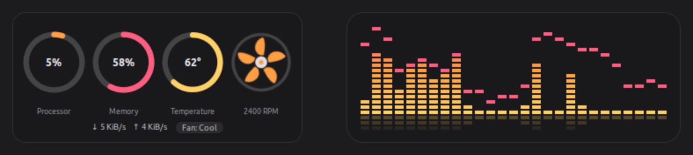
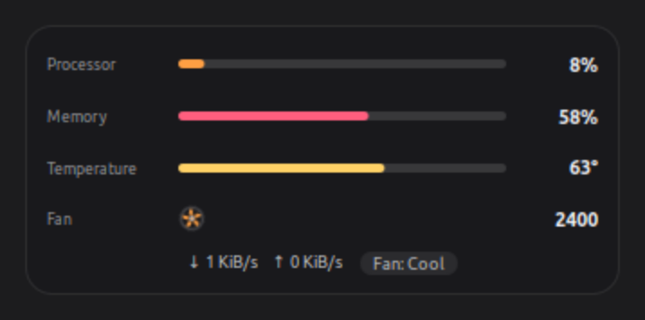

Tempo › Desktop widgets
Desktop widgets for GNOME, without the weight
Two floating panels that you put anywhere on any screen: a system panel and a music visualizer. They sit on the desktop behind your windows like widgets, or on top of them, and each replaces its part of the top bar while it is on.
- Free and open source
- GNOME 42 to 50 on Ubuntu, Fedora, Debian, Arch and more
- 250 KB, nothing else installed

What you get
- System panel: processor, memory, temperature and network speed in one place, as rings or as bars, with a little fan that turns while your real fan does.
- Visualizer panel: your music as bars of lit segments with peak caps and a reflection, mirrored, or as a wave. More about the visualizer.
- Drag to move, drag the corner to zoom. A panel keeps its shape and everything in it grows with it. Drag the right or bottom edge to change its shape. Place and size are remembered.
- Any screen: put each panel on whichever monitor you like. If that monitor is unplugged, the panel comes to your main screen and goes back when it returns.
- Your look: behind your windows like a desktop widget or on top of them; a glass, solid or clear background; four palettes.
- No clutter: a panel takes its readings out of the top bar while it is on, so nothing is shown twice.


What it costs your computer
Measured with the project's own benchmark (make bench), in percent of one processor core.
| System panel | 0.2 % |
| Its little fan, while the real fan turns | 0.7 % more |
| Visualizer panel, while music plays | 2.7 % |
| In the overview, or while the screens are off | Nothing is animated |
The panels are drawn by GNOME Shell itself, not by a separate program, and reuse the readings Tempo already has. One thing Tempo cannot see is whether a window covers a panel: a visualizer behind a window still animates, so switch it off when you do not want it. How Tempo stays light.
Turn it on
- Install Tempo with the buttons above (the install guide has every step).
- Click Tempo in the top bar, open Floating panels and switch on the system panel, the visualizer panel, or both.
- Drag a panel where you want it, and drag its corner to size it. Designs, background and placement are under Settings.
Questions
Does GNOME have desktop widgets?
Not by itself. Tempo adds two: a system panel (processor, memory, temperature, network speed, fan) and a music visualizer. Both are drawn by GNOME Shell, so they need no separate program and no configuration files.
I cannot drag the panel. Why?
A panel on the desktop sits behind everything else, so a click only reaches it where nothing is in front. If your desktop shows icons (Ubuntu's Desktop Icons does) or you use the older X11 session, set Place them to On top of windows in the settings, move and size the panel, then switch back.
Does it work with several monitors?
Yes. Each panel can go on any monitor, and its place is remembered.
Do the widgets use the processor all the time?
The system panel costs about 0.2 % of one processor core. The visualizer costs 2.7 % while music plays and nothing while it does not. In the overview and while the screens are off, nothing is animated.
Can I resize the widgets?
Yes. Drag the bottom-right corner to zoom a panel: it keeps its shape, and the rings, text and bars grow with it. Drag the right or bottom edge to make it wider or taller instead.
Also in Tempo
Tempo is one small GNOME Shell extension. Every part has its own switch, and a part that is off costs nothing.
System monitor
CPU and memory as two small rings, with the details one click away.
Internet speed
Download and upload speed in the top bar, in a width that never changes.
Music visualizer
Bars that move with your music, in the top bar or floating on the desktop.
CPU temperature
The processor's temperature in the top bar, amber and red when it gets hot.
Fans
Every fan and its speed, and an optional cooler fan curve for late starters.